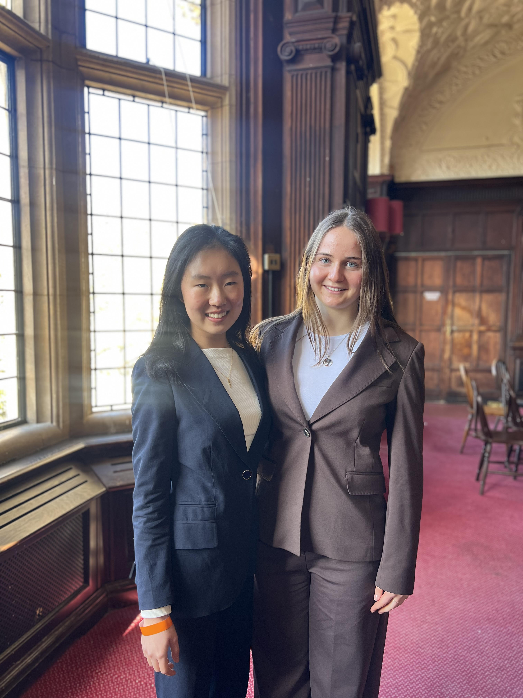

A student-run organisation bringing debate to all through the power of interest.
Our mission is to give back to our community by changing lives through debate.
We are a student run organisation, in the process of charity registration, which hosts online webinars and in-person sessions to spread the skill of debate.
"As students, we've experienced firsthand the impact debate has made on our lives, and we want to ensure that everybody has equal access to the same opportunities, to change as many lives as possible."— Maria Fargher & Alison Zhao, Founders of POI

Left: Alison Zhao | Right: Maria Fargher
Speaking up is a crucial form of self-expression, one which we believe every student deserves. Research shows that students who participate in debate improve their reading and critical thinking scores by up to 13%, and are 29% more likely to pursue higher education, all while developing a profound sense of self-belief and resilience. Not only do debaters gain the ability to speak confidently, they learn to critically analyse, build, and deconstruct arguments.
We're just getting started — here's what's ahead for POI.
We are completing our formal charity registration to give POI the structure and credibility it deserves, ensuring full transparency and accountability.
Our very first online skills workshops and in-person debate sessions launch — the beginning of our mission to build confident speakers across the country.
We're exploring an online debate competition open to all POI participants. Exact dates are still being confirmed — watch this space!
POI hosts its first Model United Nations (MUN) conference — bringing together students from across the country to debate real-world issues on a prestigious stage.